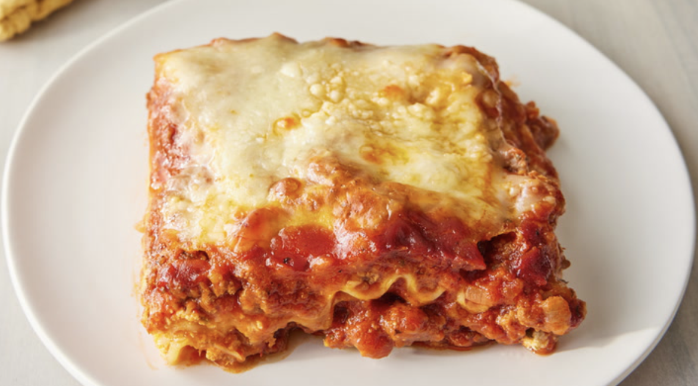

Lasagna

Description
This lasagna recipe takes a little work, but it is so satisfying and filling that it's worth it!
Ingrediants
- Beef mince
- Lasagna sheets
- White sauce
- Passata
Steps
- To make the meat sauce, heat 2 tbsp olive oil in a frying pan and cook 750g lean beef mince in two batches
for about 10 mins until browned all over.
- Finely chop 4 slices of prosciutto from a 90g pack, then stir through the meat mixture.
- Pour over 800g passata or half our basic tomato sauce recipe and 200ml hot beef stock. Add a little grated
nutmeg, then season.
- Bring up to the boil, then simmer for 30 mins until the sauce looks rich.